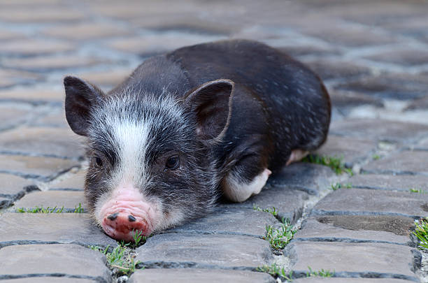
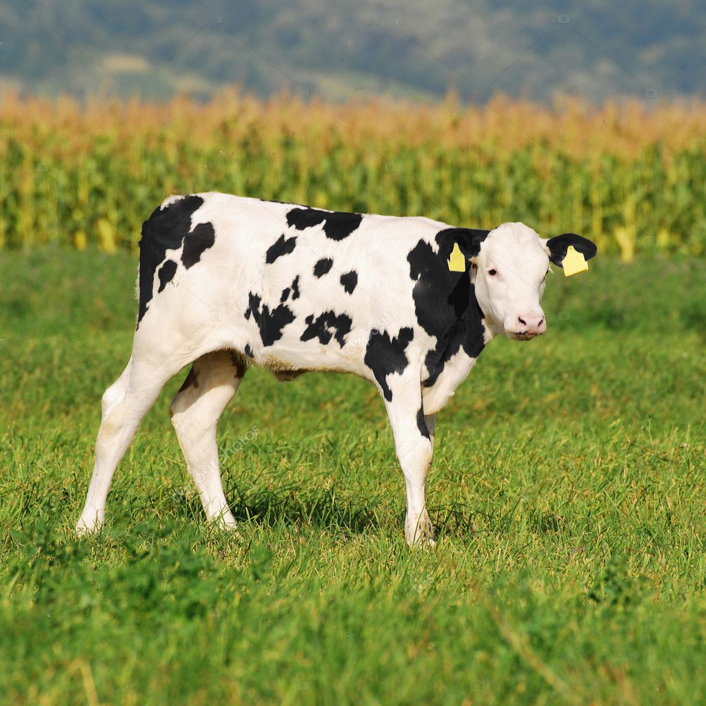
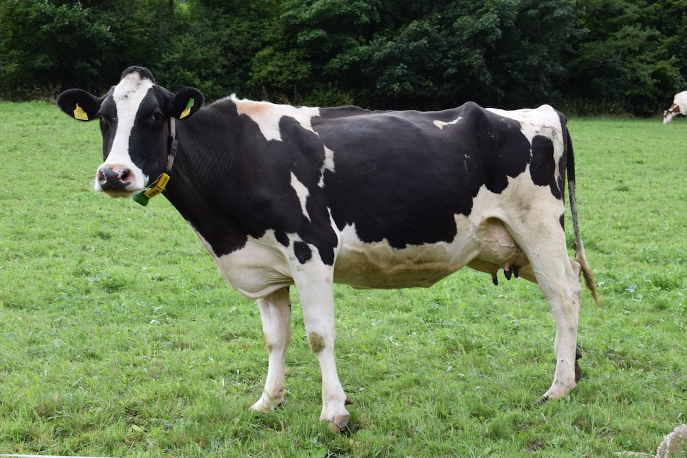

ჩვენ შეგვიძლია სიყვარული გვსურს თავისუფლება ვგრძნობთ ტკივილს გვყავს მეგობრები გვაქვს ემოციები
უნდა გავიაზროთ
ნებისმიერი ცხოველური პროდუქტის შეძენით ამ ყველაფრის დამფინანსებელი გამოვდივართ. ანუ როდესაც რაღაცას ვუკვეთავთ და სხვა აკეთებს ამ ყველაფრის მონაწილე გამოვდივართ. მაგრამ თუკი რაიმე საქმე უკვე გაკეთებულია და შემდეგ ვიხდით ფულს გამოდის რომ ჩვენ ვქმნით მოთხოვნას. ეს ორი კი ერთმანეთისგან არ განსხვავდება.
შეუძლებელია ცხოველს წაართვა რამე ტკივილის გარეშე
თეფშამდე პასუხისმგებლობა
თუკი ფერმაში მყოფი ცხოველს აცხოვრებდნენ გამუდმებით ტყვეობაში, ტანჯვაში და განიცდიდა მუდმივ ტკივილს სიკვდილის შემდეგ კი ის თქვენს თეფშზე აღმოჩნდა, გამოდის რომ ეს ყველაფერი თქვენსგამო გადაიტანა შესაბამისად პასუხისმგებლობა თქვენზეა
სპეცისიზმი
როდესაც ადამიანი ფეხს ამოარტყამს ძაღლს, ამის გამო იგი თითქმის ყველასთვის მიუღებელ პერსონად იქცევა, მაგრამ როდესაც ადამიანი ჭამს სხვა ცხოველს ეს ნორმალურად ითვლება.
ეს ასე არ უნდა იყოს. ორივე მათგანმა ცხოველს ზიანი მიაყენა პირადი სიამოვნებისთვის: ერთ-ერთს ცხოველზე ძალადობა სიამოვნებს ხოლო მეორე კი კუჭის სიამოვნებისთვის კლავს ცხოველს. რეალობა კი ის არის რომ ძაღლიც და ღორიც ორივე ერთნაირი ცხოველია გონებრივი თვალსაზრისით. ასევე აღსაღნიშნია ფაქტი ძაღლის შემთხვევაში ერთჯერადად მოხდა ძალადობა ღორის შემთხვევაში კი მთელი ცხოვრების განმავლობაში ტანჯვა საბოლოდ კი სიკვდილით დასრულდა.

არსებობა ფერმაში
ქათამი
დაბადებისას ხდება გადარჩევა დედალი იცოცხლებს მამალი დაბადების თანავე მოკვდება რადგან კვერცხს არ დებს. მოკვლის ხერხი ძირითადად არის ცოცხლად დაბლენდერება. მიღებულ მასას იყენებენ ქათმების გამოსაკვებად
გადარჩენილ დედლებს ცხელი მაკრატლით აჭრიან ნისკარტებს რათა არ დააზიანონ ერთმანეთი და კვერცხი. ამყოფებენ ბევრს პატარა ტერიტორიაზე ან გალიაში. გამუდმებით ტყვეობაში
ქათმისთვის კვერცხის დება იგივეა რაც ქალისთვის მესტრუაციული პროცესი. ბუნებრივ პირობებში უნდა დებდეს 12 კვერცხს წელიწადშ ფერმაში კი 300-350. შუქის მეშვეობით ატყუებენ და დღეღამეს 12 საათიანს ხდიან, ეს კი კვერცხის რაოდენობას აორმაგებს
დაბადებისას ხდება გადარჩევა დედალი იცოცხლებს მამალი დაბადების თანავე მოკვდება რადგან კვერცხს არ დებს. მოკვლის ხერხი ძირითადად არის ცოცხლად დაბლენდერება . მიღებულ მასას იყენებენ ქათმების გამოსაკვებად
ღორი
დაბადებისთანავე ხდება მათი დასახიჩრება - ყოველგვარი ანესთეზიის გარეშე აჭრიან კუდებს და აძრობენ ეშვებს. მამრ გოჭებს კი ყოველგვარი გამაყუჩებლების გარეშე უკეთებენ კასტრაციას სასტიკი მეთოდებით.
მთელი ცხოვრების განმავლობაში ამყოფებენ ტყვეობაში ცალკეულ ან საერთო გალიებში. სადაც არაქვთ საშვალება ნორმალურად გადაადგილების საშვალებაც კი.
ღორების გამრავლების მიზნით ხდება მათი გაუპატიურება ადამიანის ხელით. რაშიც გამოიყენება სხვვადასხვა ხელსაწყო ან მხოლოდ ხელთათმანი. სპერმის მოსაპოვებლად კი იყენებენ სხვადასხვა სათამაშოებს ან ადამიანი ახდენს სტიმულირებას.
გამუდმებული ტყვეობა, გადაადგილების მიზნით ცემა ან დენის დარტყმა. ადამიანის მიერ გაუპატიურება, შვილების წართმევა, გამუდმებული ორსულობა და სხვა.
ძროხა


დაბადების შემდეგ მალევე 1-2 კვირის ინტერვალში ხდება დედისგან მოშორება რაც რათქმაუნდა ორივესთვის მტკინვეულია. უნდა გავიაზროთ რომ ცხოველებსაც აქვთმშობლური ინსტიქტები და სიყვარული. ჰყავთ მეგობრები უყვართ ერთმანეთი. დაშორებები კი აყენებენ დიდ ემოციურ ტკივილს.
გამუდმებული ტყვეობა ხშირ შემთხვევაში კი ერთ ადგილზე დგომა. როდესაც მხოლოდ თავის მოძრაობა შეუძლიათ დახრა და ზევით აწევა საჭმელად. მუდმივი ორსულობა და ყოველდღიური წველვა. გამოდმებული ჯიქნის სტიმულირება იწვევს მის დაჩირქებას.
ძროხების გამრავლების მიზნით ხდება მათი გაუპატიურება ადამიანის ხელით. რაშიც გამოიყენება სხვვადასხვა ხელსაწყო ან მხოლოდ ხელთათმანი. სპერმის მოსაპოვებლად კი იყენებენ სხვადასხვა სათამაშოებს ან ადამიანი ახდენს სტიმულირებას.
მთელი ცხოვრება ტყვეობა, ადამიანის მიერ გაუპატიურება, შვილის მოტაცება, მუდმივი წველა, დაჩირქებული ჯიქანი, მამრების შემთხვევაში სხვადასხვა დაშინებები რათა აგრესიული გახდნენ , ელექტრო შოკი დაშნებით დასერვა და სხვა.
სხვა ინდუსტრიები
თევზის ინდუსტრია
ტყავი და ბუმბული
უნდა გავითვალისინოთ, რომ ხარისხიანი ტყავის მისაღებას ხდება ცხოველის ცოცხლად გატყვავება. ასევე, ბუმბულის მისაღებაც ბატებს და ქათმებს პუტავენ ცოცხლად, შემდეგ კლავენ.
ლობსტერები
საყურადღებოა ფაქტი, რომ თევზები არიან სრულყოფილი არსებები, რომელთაც გააჩნიათ ნერვული სისტემა. თითოეული მათგანი იხოცება გაგუდვისგან. თევზის ფერმაში ხდება მათი გამრავლება პატარა სივრცეში, რაც მათთვის ტანჯვაა. ამ დროს განიცდიან გამუდმებულ შიშს და პანიკას.
შინაური მეგობრები
ლობსტერებს გააჩნიათ ნერვული სისტემა, მათი მომზადების წესი კი მოიცავს ცოცხლად ცხიმში შეწვას ან მოხარშვას. შესაბამისად, ეს არის უზომოდ დიდი სისასტიკე, განიცდიან აუტანელ ტკივლის.
შინაურ ცხოველს სანამ იყოლიებთ, უნდა გაითვალისწინოთ არის თუ არა ის სახლის ცხოველი. მაგალითად, თუთიყუში, ზაზუნა, თევზი. რეალურად, მათ ვართმევთ თავისუფლებას და ვამყოფებთ ტყვეობაში. ასევე, ყველა ძაღლი არ არის სახლის ან ქალაქის.
თუკი რომელიმე ინდუსტრიის მომხმარებელი ხარ, ეს ნიშნავს, რომ ეს სისასტიკე შენი დაკვეთით ხდება და შენ გეკისრება პასუხისმგებლობა ამ სისასტიკეზე.
რამდენხანს ცოცხლობს ცხოველი ფერმაში
ქათამი (რომელიც კვერცხს არ დებს)
სიცოცხლის ხანგრძლივობა: 8 წ დაკვლის ასაკი : 1-2დღე
ძროხა (რომლის მეშვეობითაც იღებენ სპერმას)
სიცოცხლის ხანგრძლივობა: 15-20წ დაკვლის ასაკი : 18თვე
ქათამი (რომელიც კვერცხს დებს)
სიცოცხლის ხანგრძლივობა: 8 წ დაკვლის ასაკი : 1-2 წელი
ძროხა (რომელსაც რძე აქვს)
სიცოცხლის ხანგრძლივობა: 15-20წ დაკვლის ასაკი : 5 წ
ბატკანი
სიცოცხლის ხანგრძლივობა: 12 წ დაკვლის ასაკი : 3-6 თვე
ღორი (მდედრი რომელსაც ამრავლებენ)
სიცოცხლის ხანგრძლივობა: 15წ დაკვლის ასაკი : 3-5 წელი
ხბო (მამრი)
სიცოცხლის ხანგრძლივობა: 15-20წ დაკვლის ასაკი : 32 კვირა
ღორი (მამრი რომელიც არ მრავლდება)
სიცოცხლის ხანგრძლივობა: 15წ დაკვლის ასაკი : 6 თვე
უფრო მეტი ინფორმაციისთვის შეგიძლიათ უყუროთ სხვადასხვა ვიდეოებს და ფილმებს